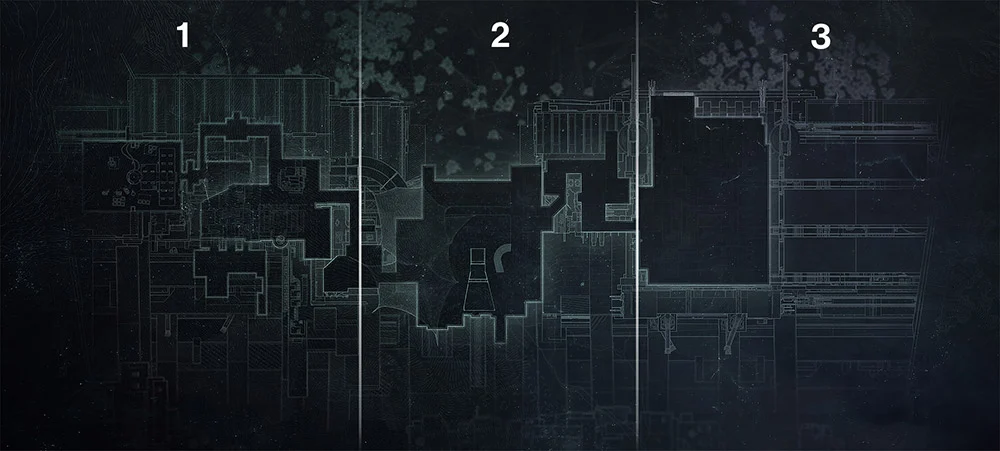
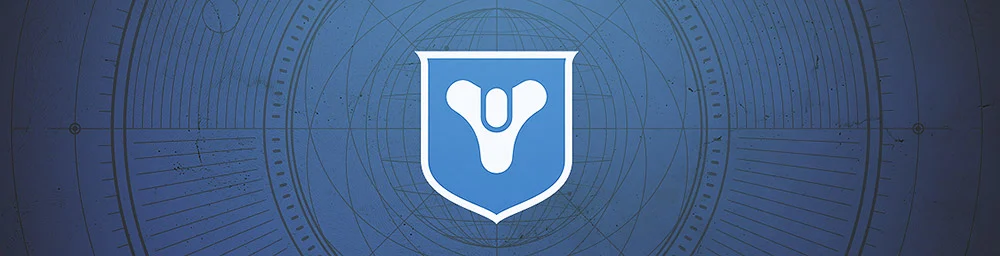
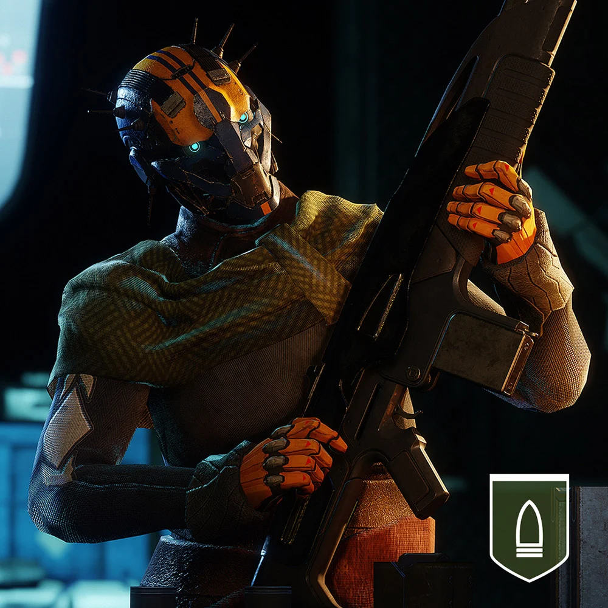
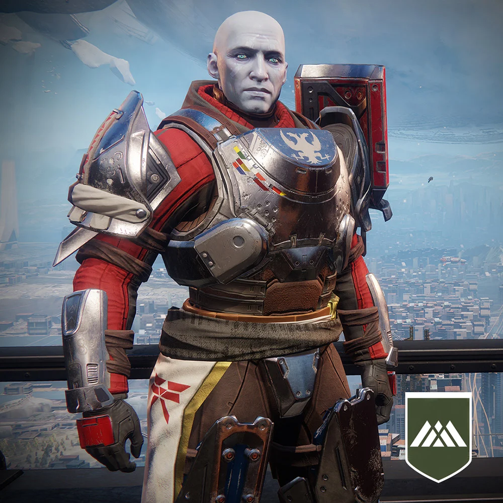
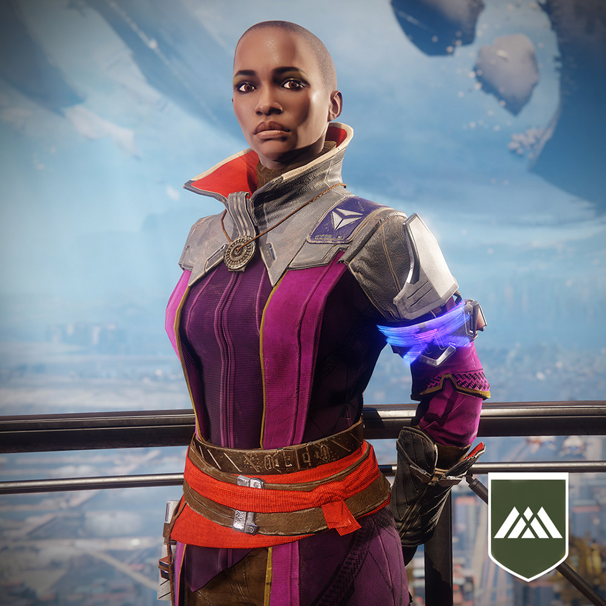
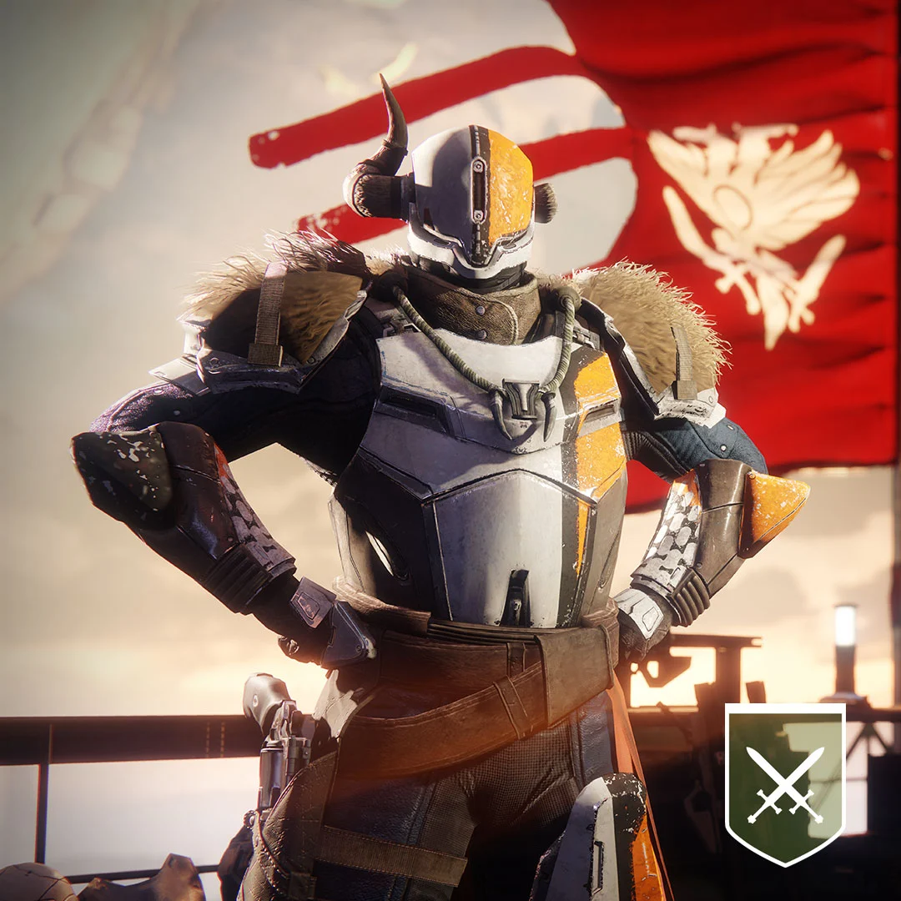

Esta esbelta estructura se sitúa en la Última Ciudad, donde la mayor parte de lo que queda de la humanidad se amontona bajo la impresionante silueta del Viajero. Conoce a los aliados aquí mientras aprendes el significado de diferentes iconos y marcas del mapa y la pantalla.
Fíjate en los marcadores de aventura azules. Puedes unirte a otros guardianes al instante para asaltos de la Vanguardia, Ocaso: El suplicio, viajar a lugares disponibles para patrullas autodirigidas, repartir y evitar la dominación en partidas del Crisol y de Gambito y mucho más. Pero tendrás que buscar los iconos azules decorados con el símbolo de Destiny para progresar como nuevo jugador. Te dejamos un resumen de las primeras paradas:

Fíjate en los marcadores de aventura azules. Puedes unirte a otros guardianes al instante para asaltos de la Vanguardia, Ocaso: El suplicio, viajar a lugares disponibles para patrullas autodirigidas, repartir y evitar la dominación en partidas del Crisol y de Gambito y mucho más. Pero tendrás que buscar los iconos azules decorados con el símbolo de Destiny para progresar como nuevo jugador. Te dejamos un resumen de las primeras paradas:

Banshee-44 entrega a los guardianes recién llegados un arma cinética nueva para reemplazar la primera. Al equiparla, comenzarás el proceso progresivo de ir subiendo de nivel de Poder con nuevo equipamiento.

El comandante Zavala encomienda a los guardianes a la aventura de un asalto de la Vanguardia, que se inicia en la pestaña de Destinos de la carta estelar. También otorga una serie de recompensas al momento, como una nueva carcasa de Espectro y un shader.

Ikora Rey, que estará en el Bazar, es la Vanguardia de hechiceros. Te envía a la Zona Muerta Europea para que localices a Devrim Kay. Al hacerlo, conseguirás acceso a actividades libres.

Lord Shaxx ofrece contratos del Crisol (PvP) y aventuras especiales relacionadas con distintas armas. Al igual que Zavala, él puede otorgar recompensas inmediatas y también es el comentarista de todas las partidas del Crisol, con la excepción de las partidas del Estandarte de Hierro y de las Pruebas de Osiris.
Quieres volver a la pagina principal ?